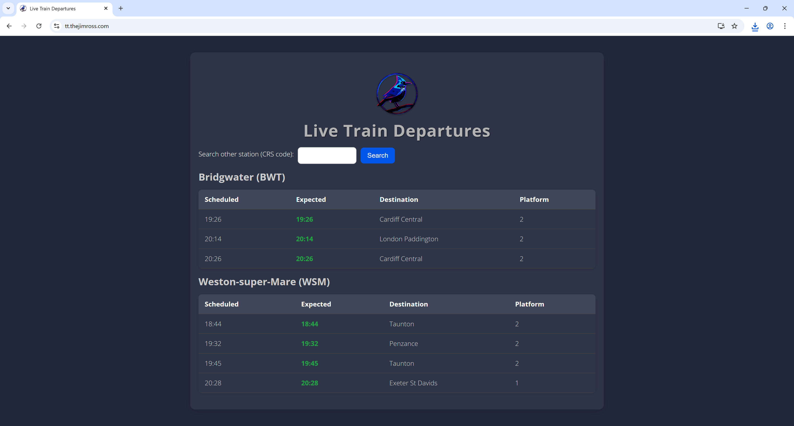

Train Timetable

This was my first project ended up in me building a PWA that I could use to easily find live train times when travelling to and from university.
I initially started this with the thought that it would be a simple project, simply linking a webpage to an API and then visiting a bookmarked webpage. I soon realised that this wasn't quite what I needed and with the help of AI it appeared that I would need to build a PWA using Python.
You can view the live application by clicking the image or visiting tt.thejimross.com.